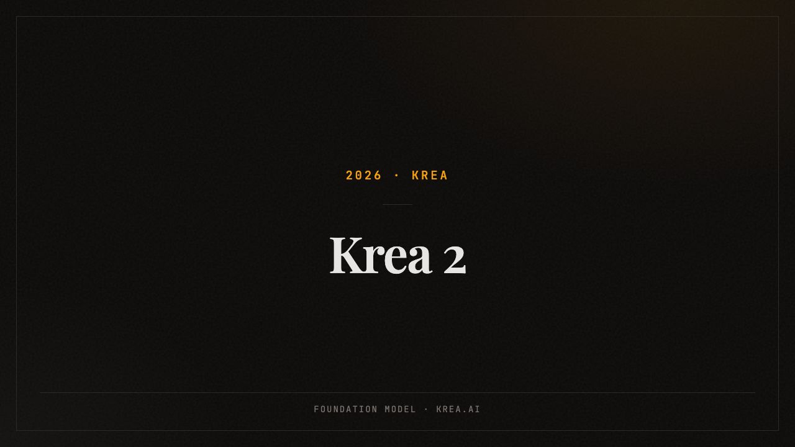
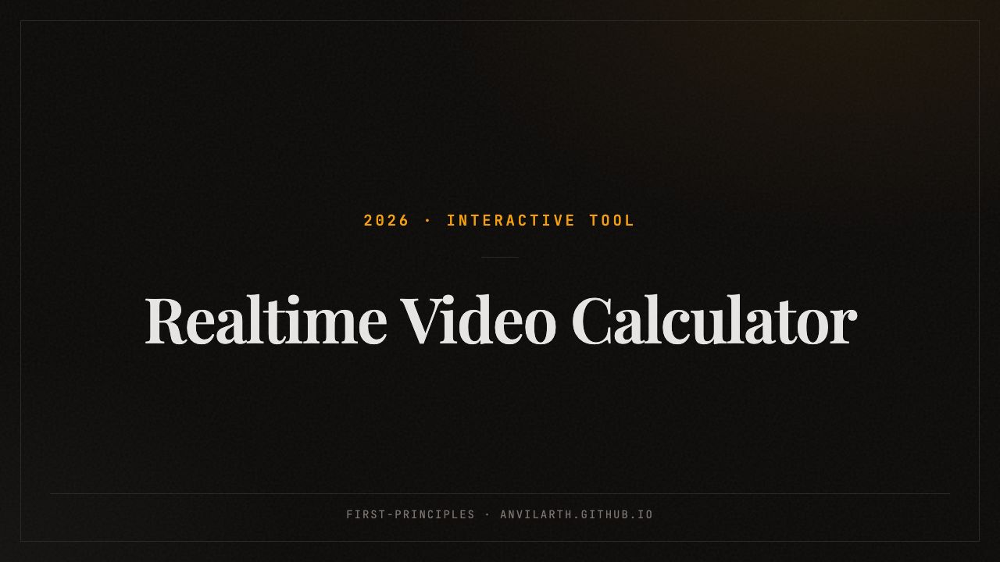
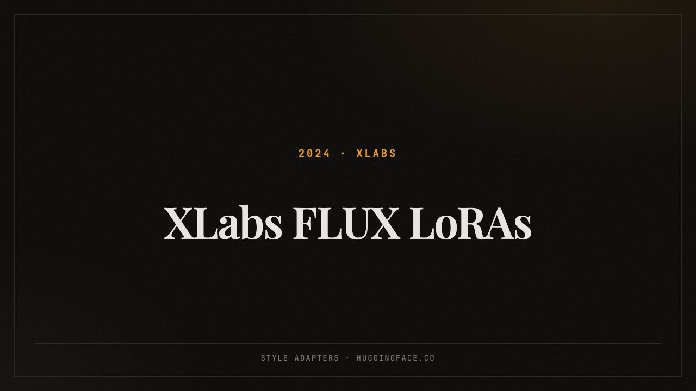
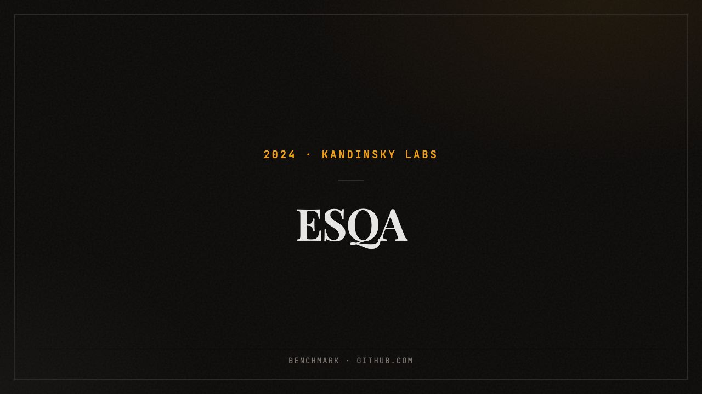
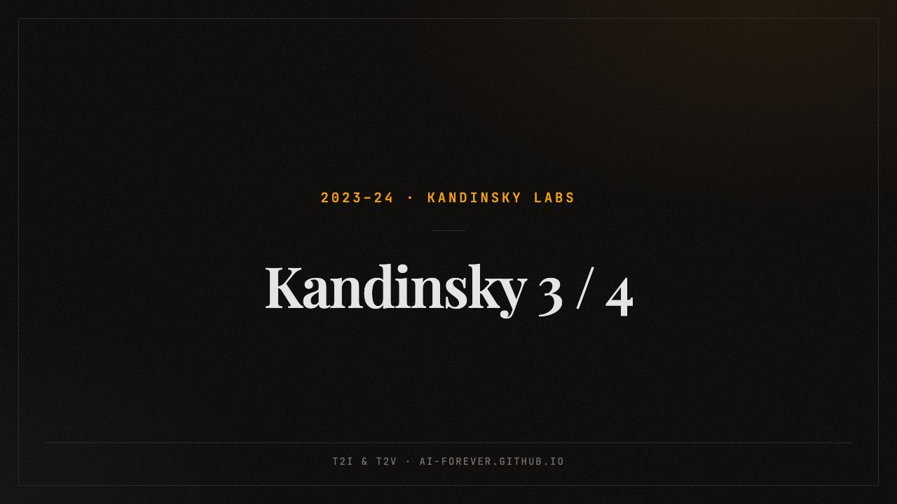
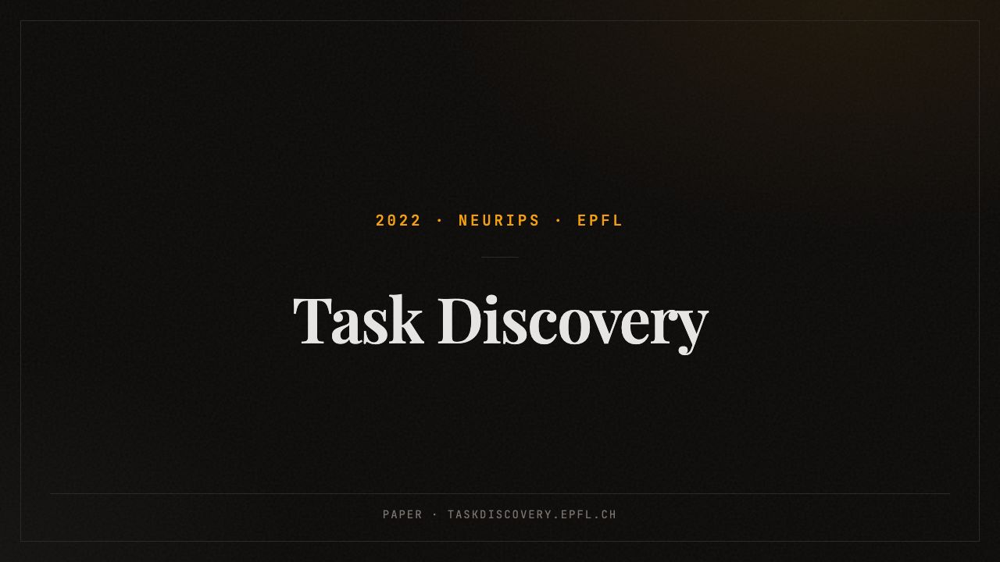
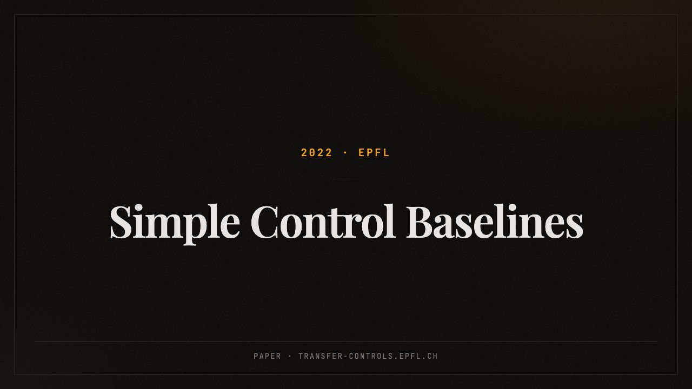
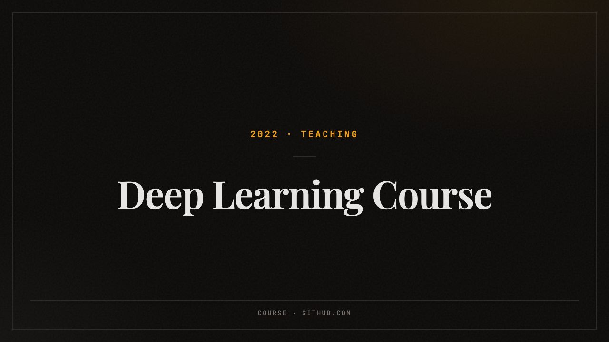
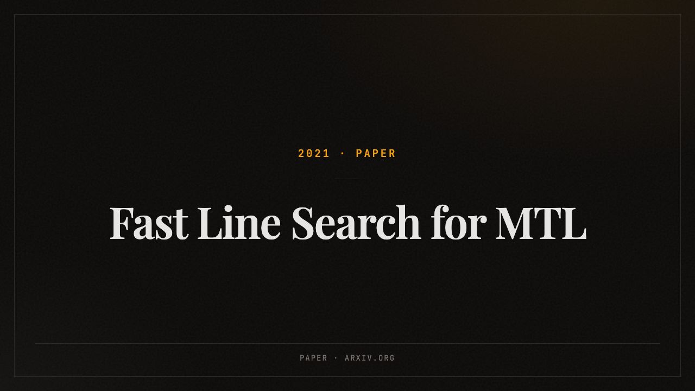

Selected Work
Foundation models, generation platforms, papers and tools — things shipped, not just started

Open-weights text-to-image foundation model trained from scratch. Contributed to the style-conditioning system — ranked second worldwide on style fidelity — and co-led the Krea 2 Editing model training.

First-principles compute estimator for diffusion and AR streaming video models — tweak the parameters and see when generation becomes realtime.

The first style adapters for FLUX, open-source together with the training and inference framework. The top adapter reached 500k downloads in its first month.

Adapting LLMs to event-sequence data — transactions, logs, user histories — solving multiple downstream tasks with little or no finetuning.

A family of text-to-image and text-to-video foundation models. Co-author of the 3.0 technical report and of the Kandinsky 3 framework paper at EMNLP 2024. Also led the Kandinsky 3 inpainting model end-to-end and a ControlNet-based editing model trained on 256+ GPUs — shipped to fusionbrain.ai and inside GigaChat.

Discovering the tasks on which neural networks generalize well — by optimizing an agreement-score objective.

An evaluation standard for transfer learning: control baselines, practices and metrics for a calibrated comparison of self-supervised models.

A full deep learning course prepared and taught in a team of two: neural networks, sequences, computer vision, RL, generative models.

Step-size line search in the latent representation space instead of the parameter space — faster convergence for multi-task models, validated on MNIST, CIFAR-10 and Cityscapes. With Daniil Merkulov.